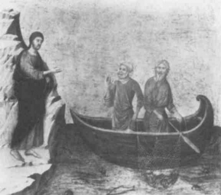
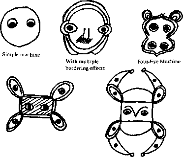
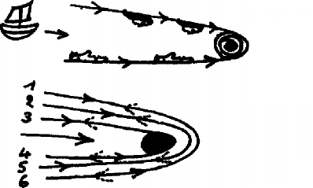

Earlier, we encountered two axes, signifiance and subjectification. We saw that they were two very different semiotic systems, or even two strata. Signifiance is never without a white wall upon which it inscribes its signs and redundancies. Subjectification is never without a black hole in which it lodges its consciousness, passion, and redundancies. Since all semiotics are mixed and strata come at least in twos, it should come as no surprise that a very special mechanism is situated at their intersection. Oddly enough, it is a face: the white wall/black hole system. A broad face with white cheeks, a chalk face with eyes cut in for a black hole. Clown head, white clown, moon-white mime, angel of death, Holy Shroud. The face is not an envelope exterior to the person who speaks, thinks, or feels. The form of the signifier in language, even its units, would remain indeterminate if the potential listener did not use the face of the speaker to guide his or her choices (“Hey, he seems angry …”; “He couldn’t say it…”; “You see my face when I’m talking to you …”; “look at me carefully…”). A child, woman, mother, man, father, boss, teacher, police officer, does not speak a general language but one whose signifying traits are indexed to specific faciality traits. Faces are not basically individual; they define zones of frequency or probability, delimit a field that neutralizes in advance any expressions or connections unamenable to the appropriate significations. Similarly, the form of subjectivity, whether consciousness or passion, would remain absolutely empty if faces did not form loci of resonance that select the sensed or mental reality and make it conform in advance to a dominant reality. The face itself is redundancy. It is itself in redundancy with the redundancies of signifiance or frequency, and those of resonance or subjectivity. The face constructs the wall that the signifier needs in order to bounce off of; it constitutes the wall of the signifier, the frame or screen. The face digs the hole that subjectification needs in order to break through; it constitutes the black hole of subjectivity as consciousness or passion, the camera, the third eye.
Or should we say things differently? It is not exactly the face that constitutes the wall of the signifier or the hole of subjectivity. The face, at least the concrete face, vaguely begins to take shape on the white wall. It vaguely begins to appear in the black hole. In film, the close-up of the face can be said to have two poles: make the face reflect light or, on the contrary, emphasize its shadows to the point of engulfing it “in pitiless darkness.”1 A psychologist once said that the face is a visual percept that crystallizes out of “different varieties of vague luminosity without form or dimension.” A suggestive whiteness, a hole that captures, a face. According to this account, the dimensionless black hole and formless white wall are already there to begin with. And there are already a number of possible combinations in the system: either black holes distribute themselves on the white wall, or the white wall unravels and moves toward a black hole combining all black holes, hurtling them together or making them “crest.” Sometimes faces appear on the wall, with their holes; sometimes they appear in the hole, with their linearized, rolled-up wall. A horror story, the face is a horror story. It is certain that the signifier does not construct the wall that it needs all by itself; it is certain that subjectivity does not dig its hole all alone. Concrete faces cannot be assumed to come ready-made. They are engendered by an abstract machine of faciality (visageite), which produces them at the same time as it gives the signifier its white wall and subjectivity its black hole. Thus the black hole/white wall system is, to begin with, not a face but the abstract machine that produces faces according to the changeable combinations of its cogwheels. Do not expect the abstract machine to resemble what it produces, or will produce.
The abstract machine crops up when you least expect it, at a chance juncture when you are just falling asleep, or into a twilight state or hallucinating, or doing an amusing physics experiment … Kafka’s novella, “Blumfeld”:2 the bachelor returns home in the evening to find two little ping-pong balls jumping around by themselves on the “wall” constituted by the floor. They bounce everywhere and even try to hit him in the face. They apparently contain other, still smaller, electric balls. Blumfeld finally manages to lock them up in the black hole of a wardrobe. The scene continues the next day when Blumfeld tries to give the balls to a small, feebleminded boy and two grimacing little girls, and then at the office, where he encounters his two grimacing and feebleminded assistants, who want to make off with a broom. In a wonderful ballet by Debussy and Nijinsky, a little tennis ball comes bouncing onto the stage at dusk, and at the end another ball appears in a similar fashion. This time, between the two balls, two girls and a boy who watches them develop passional dance and facial traits in vague luminosities (curiosity, spite, irony, ecstasy…).3 There is nothing to explain, nothing to interpret. It is the pure abstract machine of a twilight state. White wall/black hole? But depending on the combinations, the wall could just as well be black, and the hole white. The balls can bounce off of a wall or spin into a black hole. Even upon impact they can have the relative role of a hole in relation to the wall, just as when they are rolling straight ahead they can have the relative role of a wall in relation to the hole they are heading for. They circulate in the white wall/black hole system. Nothing in all of this resembles a face, yet throughout the system faces are distributed and faciality traits organized. Nevertheless, the abstract machine can be effectuated in other things besides faces, but not in any order, and not without the necessary foundation (raisons).
The face has been a major concern of American psychology, in particular the relation between the mother and the child through eye-to-eye contact. Four-eye machine? Let us recall certain stages in the research: (1) Isakower’s studies on falling asleep, in which so-called proprioceptive sensations of a manual, buccal, cutaneous, or even vaguely visual nature recall the infantile mouth-breast relation. (2) Lewin’s discovery of a white screen of the dream, which is ordinarily covered by visual contents but remains white when the only dream contents are proprioceptive sensations (this screen or white wall, once again, is the breast as it approaches, getting larger and then pressing flat). (3) Spitz’s interpretation according to which the white screen, rather than being a representation of the breast itself as an object of tactile sensation or contact, is a visual percept implying a minimum of distance and upon which the mother’s face appears for the child to use as a guide in finding the breast. Thus there is a combination of two very different kinds of elements: manual, buccal, or cutaneous proprioceptive sensations; and the visual perception of the face seen from the front against the white screen, with the shape of the eyes drawn in for black holes. This visual perception very quickly assumes decisive importance for the act of eating, in relation to the breast as a volume and the mouth as a cavity, both experienced through touch.4
We can now propose the following distinction: the face is part of a surface-holes, holey surface, system. This system should under no circumstances be confused with the volume-cavity system proper to the (proprioceptive) body. The head is included in the body, but the face is not. The face is a surface: facial traits, lines, wrinkles; long face, square face, triangular face; the face is a map, even when it is applied to and wraps a volume, even when it surrounds and borders cavities that are now no more than holes. The head, even the human head, is not necessarily a face. The face is produced only when the head ceases to be a part of the body, when it ceases to be coded by the body, when it ceases to have a multidimensional, polyvocal corporeal code — when the body, head included, has been decoded and has to be overcoded‘by something we shall call the Face. This amounts to saying that the head, all the volume-cavity elements of the head, have to be facialized. What accomplishes this is the screen with holes, the white wall/black hole, the abstract machine producing faciality. But the operation does not end there: if the head and its elements are facialized, the entire body also can be facialized, comes to be facialized as part of an inevitable process. When the mouth and nose, but first the eyes, become a holey surface, all the other volumes and cavities of the body follow. An operation worthy of Doctor Moreau: horrible and magnificent. Hand, breast, stomach, penis and vagina, thigh, leg and foot, all come to be facialized. Fetishism, erotomania, etc., are inseparable from these processes of facializa-tion. It is not at all a question of taking a part of the body and making it resemble a face, or making a dream-face dance in a cloud. No anthropomorphism here. Facialization operates not by resemblance but by an order of reasons. It is a much more unconscious and machinic operation that draws the entire body across the holey surface, and in which the role of the face is not as a model or image, but as an overcoding of all of the decoded parts. Everything remains sexual; there is no sublimation, but there are new coordinates. It is precisely because the face depends on an abstract machine that it is not content to cover the head, but touches all other parts of the body, and even, if necessary, other objects without resemblance. The question then becomes what circumstances trigger the machine that produces the face and facialization. Although the head, even the human head, is not necessarily a face, the face is produced in humanity. But it is produced by a necessity that does not apply to human beings “in general.” The face is not animal, but neither is it human in general; there is even something absolutely inhuman about the face. It would be an error to proceed as though the face became inhuman only beyond a certain threshold: closeup, extreme magnification, recondite expression, etc. The inhuman in human beings: that is what the face is from the start. It is by nature a close-up, with its inanimate white surfaces, its shining black holes, its emptiness and boredom. Bunker-face. To the point that if human beings have a destiny, it is rather to escape the face, to dismantle the face and facializations, to become imperceptible, to become clandestine, not by returning to animality, nor even by returning to the head, but by quite spiritual and special becomings-animal, by strange true becomings that get past the wall and get out of the black holes, that make faciality traits themselves finally elude the organization of the face — freckles dashing toward the horizon, hair carried off by the wind, eyes you traverse instead of seeing yourself in or gazing into in those glum face-to-face encounters between signifying subjectivities. “I no longer look into the eyes of the woman I hold in my arms but I swim through, head and arms and legs, and I see that behind the sockets of the eyes there is a region unexplored, the world of futurity, and here there is no logic whatsoever. … I have broken the wall…. My eyes are useless, for they render back only the image of the known. My whole body must become a constant beam of light, moving with an ever greater rapidity, never arrested, never looking back, never dwindling…. Therefore I close my ears, my eyes, my mouth.”5 BwO. Yes, the face has a great future, but only if it is destroyed, dismantled. On the road to the asignifying and asubjective. But so far we have explained nothing of what we sense.
The move from the body-head system to the face system has nothing to do with an evolution or genetic stages. Nor with phenomenological positions. Nor with integrations of part-objects, or structural or structuring systems. Nor can there be any appeal to a preexisting subject, or one brought into existence, except by this machine specific to faciality. In the literature of the face, Sartre’s text on the look and Lacan’s on the mirror make the error of appealing to a form of subjectivity or humanity reflected in a phenomenological field or split in a structural field. The gaze is but secondary in relation to thegazeless eyes, to the black hole of faciality. The mirror is but secondary in relation to the white wall of faciality. Neither will we speak of a genetic axis, or the integration of part-objects. Any approach based on stages in ontogenesis is arbitrary: it is thought that what is fastest is primary, or even serves as a foundation or springboard for what comes next. An approach based on part-objects is even worse; it is the approach of a demented experimenter who flays, slices, and anatomizes everything in sight, and then proceeds to sew things randomly back together again. You can make any list of part-objects you want: hand, breast, mouth, eyes… It’s still Frankenstein. What we need to consider is not fundamentally organs without bodies, or the fragmented body; it is the body without organs, animated by various intensive movements that determine the nature and emplacement of the organs in question and make that body an organism, or even a system of strata of which the organism is only a part. It becomes apparent that the slowest of movements, or the last to occur or arrive, is not the least intense. And the fastest may already have converged with it, connected with it, in the disequilibrium of a nonsynchronic development of strata that have different speeds and lack a sequence of stages but are nevertheless simultaneous. The question of the body is not one of part-objects but of differential speeds.
These movements are movements of deterritorialization. They are what “make” the body an animal or human organism. For example, the prehensile hand implies a relative deterritorialization not only of the front paw but also of the locomotor hand. It has a correlate, the use-object or tool: the club is a deterritorialized branch. The breast of the woman, with her upright posture, indicates a deterritorialization of the animal’s mammary gland; the mouth of the child, adorned with lips by an outfolding of the mucous membranes, marks a deterritorialization of the snout and mouth of the animal. Lips-breast: each serves as a correlate of the other.6 The human head implies a deterritorialization in relation to the animal and has as its correlate the organization of a world, in other words, a milieu that has itself been deterritorialized (the steppe is the first “world,” in contrast to the forest milieu). But the face represents a far more intense, if slower, deterritorialization. We could say that it is an absolute deterritorialization: it is no longer relative because it removes the head from the stratum of the organism, human or animal, and connects it to other strata, such as signi-fiance and subjectification. Now the face has a correlate of great importance: the landscape, which is not just a milieu but a deterritorialized world. There are a number of face-landscape correlations, on this “higher” level. Christian education exerts spiritual control over both faciality and landscapity (paysageit’e): Compose them both, color them in, complete them, arrange them according to a complementarity linking landscapes to faces.7 Face and landscape manuals formed a pedagogy, a strict discipline, and were an inspiration to the arts as much as the arts were an inspiration to them. Architecture positions its ensembles — houses, towns or cities, monuments or factories — to function like faces in the landscape they transform. Painting takes up the same movement but also reverses it, positioning a landscape as a face, treating one like the other: “treatise on the face and the landscape.” The close-up in film treats the face primarily as a landscape; that is the definition of film, black hole and white wall, screen and camera. But the same goes for the earlier arts, architecture, painting, even the novel: close-ups animate and invent all of their correlations. So, is your mother a landscape or a face? A face or a factory? (Godard.) All faces envelop an unknown, unexplored landscape; all landscapes are populated by a loved or dreamed-of face, develop a face to come or already past. What face has not called upon the landscapes it amalgamated, sea and hill; what landscape has not evoked the face that would have completed it, providing an unexpected complement for its lines and traits? Even when painting becomes abstract, all it does is rediscover the black hole and white wall, the great composition of the white canvas and black slash. Tearing, but also stretching of the canvas along an axis of escape (fuite), at a vanishing point (point defuite), along a diagonal, by a knife slice, slash, or hole: the machine is already in place that always functions to produce faces and landscapes, however abstract. Titian began his paintings in black and white, not to make outlines to fill in, but as the matrix for each of the colors to come.
The novel — A flock of geese flew which the snow had dazzled. [Perceval] saw them and heard them, for they were going away noisily because of a falcon which came drawing after them at a great rate until he found abandoned one separated from the flock, and he struck it so and bruised it that he knockedit down to earth…. When Perceval saw the trampled snow on which the goose had lain, and the blood which appeared around, he leaned upon his lance and looked at that image, for the blood and the snow together seemed to him like the fresh color which was on the face of his friend, and he thinks until he forgets himself; for the vermilion seated on white was on her face just the same as these three drops of blood on the white snow…. We have seen a knight who is dozing on his charger. Everything is there: the redundancy specific to the face and landscape, the snowy white wall of the landscape-face, the black hole of the falcon and the three drops distributed on the wall; and, simultaneously, the silvery line of the landscape-face spinning toward the black hole of the knight deep in catatonia. Cannot the knight, at certain times and under certain conditions, push the movement further still, crossing the black hole, breaking through the white wall, dismantling the face — even if the attempt may backfire?8 All of this is in no way characteristic of the genre of the novel only at the end of its history; it is there from the beginning, it is an essential part of the genre. It is false to see Don Quixote as the end of the chivalric novel, invoking the hero’s hallucinations, harebrained ideas, and hypnotic or cataleptic states. It is false to see novels such as Beckett’s as the end of the novel in general, invoking the black holes, the characters’ line of deterritorialization, the schizophrenic promenades of Molloy or the Unnameable, their loss of their names, memory, or purpose. The novel does have an evolution, but that is surely not it. The novel has always been defined by the adventure of lost characters who no longer know their name, what they are looking for, or what they are doing, amnesiacs, ataxics, catatonics. They differentiate the genre of the novel from the genres of epic or drama (when the dramatic or epic hero is stricken with folly or forgetting, etc., it is in an entirely different way). La princesse de Cleves is a novel precisely by virtue of what seemed paradoxical to the people of the time: the states of absence or “rest,” the sleep that overtakes the characters. There is always a Christian education in the novel. Molloy is the beginning of the genre of the novel. When the novel began, with Chretien de Troyes, for example, the essential character that would accompany it over the entire course of its history was already there: The knight of the novel of courtly love spends his time forgetting his name, what he is doing, what people say to him, he doesn’t know where he is going or to whom he is speaking, he is continually drawing a line of absolute deterritorialization, but also losing his way, stopping, and falling into black holes. “He awaits chivalry and adventure.” Open Chretien de Troyes to any page and you will find a catatonic knight seated on his steed, leaning on his lance, waiting, seeing the face of his loved one in the landscape; you have to hit him to make him respond. Lancelot, in the presence of the queen’s white face, doesn’t notice his horse plunge into the river; or he gets into a passing cart and it turns out to be the cart of disgrace. There is a face-landscape aggregate proper to the novel, in which black holes sometimes distribute themselves on a white wall, and the white line of the horizon sometimes spins toward a black hole, or both simultaneously.
Theorems of Deterritorialization, or Machinic Propositions9
First theorem: One never deterritorializes alone; there are always at least two terms, hand-use object, mouth-breast, face-landscape. And each of the two terms reterritorializes on the other. Reterritorialization must not be confused with a return to a primitive or older territoriality: it necessarily implies a set of artifices by which one element, itself deterritorialized, serves as a new territoriality for another, which has lost its territoriality as well. Thus there is an entire system of horizontal and complementary reter-ritorializations, between hand and tool, mouth and breast, face and landscape. Second theorem: The fastest of two elements or movements of deterritorialization is not necessarily the most intense or most deterritorialized. Intensity of deterritorialization must not be confused with speed of movement or development. The fastest can even connect its intensity to the slowest, which, as an intensity, does not come after the fastest but is simultaneously at work on a different stratum or plane (for example, the way the breast-mouth relation is guided from the start by a plane of faciality). Third theorem: It can even be concluded from this that the least deterritorialized reterritorializes on the most deterritorialized. This is where the second system of reterritorializations comes in, the vertical system running from bottom to top. This is the sense in which not only the mouth but also the breast, hand, the entire body, even the tool, are “facialized.” As a general rule, relative deterritorializations (transcoding) reterritorialize on a deterritorialization that is in certain respects absolute (overcoding). We have seen that the deterritorialization of the head into a face is absolute but remains negative in that it passes from one stratum to another, from the stratum of the organism to those of signifiance and subjectification. The hand and breast reterritorialize on the face and in the landscape: they are facialized at the same time as they are landscapified. Even a use-object may come to be facialized: you might say that a house, utensil, or object, an article of clothing, etc., is watching me, not because it resembles a face, but because it is taken up in the white wall/black hole process, because it connects to the abstract machine of facialization. The close-up in film pertains as much to a knife, cup, clock, or kettle as to a face or facial element, for example, Griffith’s “the kettle is watching me.” Is it not fair to say, then, that there are close-ups in novels, as when Dickens writes the opening line of The Cricket on the Hearth: “The kettle began it…”,10 and in painting, when a utensil becomes a face-landscape from within, or when a cup on a tablecloth or a teapot is facialized, in Bonnard, Vuillard? Fourth theorem: The abstract machine is therefore effectuated not only in the faces that produce it but also to varying degrees in body parts, clothes, and objects that it facializes following an order of reasons (rather than an organization of resemblances).
Yet the question remains: When does the abstract machine of faciality enter into play? When is it triggered? Take some simple examples: the maternal power operating through the face during nursing; the passional power operating through the face of the loved one, even in caresses; the political power operating through the face of the leader (streamers, icons, and photographs), even in mass actions; the power of film operating through the face of the star and the close-up; the power of television. It is not the individuality of the face that counts but the efficacy of the ciphering it makes possible, and in what cases it makes it possible. This is an affair not of ideology but of economy and the organization of power (pouvoir). We are certainly not saying that the face, the power of the face (la puissance du visage), engenders and explains social power (pouvoir). Certain assemblages of power (pouvoir) require the production of a face, others do not. If we consider primitive societies, we see that there is very little that operates through the face: their semiotic is nonsignifying, nonsubjective, essentially collective, polyvocal, and corporeal, playing on very diverse forms and substances. This polyvocality operates through bodies, their volumes, their internal cavities, their variable exterior connections and coordinates (territorialities). A fragment from a manual semiotic, a manual sequence, may be coordinated, without subordination or unification, with an oral sequence, or a cutaneous one, or a rhythmic one, etc. Lizot, for example, shows how “the dissociation of duty, ritual and daily life is almost total… it is strange, inconceivable to us”: during mourning behavior, certain people make obscene jokes while others cry; or an Indian abruptly stops crying and begins to repair his flute; or everybody goes to sleep. “The same goes for incest. There is no incest prohibition; instead, there are sequences of incest that connect with sequences of prohibition following specific coordinates. Paintings, tattoos, or marks on the skin embrace the multidi-mensionality of bodies. Even masks ensure the head’s belonging to the body, rather than making it a face. Doubtless, there are profound movements of deterritorialization that shake up the coordinates of the body and outline particular assemblages of power; however, they connect the body not to faciality but to becomings-animal, in particular with the help of drugs. Of course, there is no less spirituality for that, for these becomings-animal involve an animal Spirit — a jaguar-spirit, bird-spirit, ocelot-spirit, toucan-spirit — that takes possession of the body’s interior, enters its cavities, and fills its volumes instead of making a face for it. Possession expresses a direct relation between Voices and the body rather than a relation to the face. Shaman, warrior, and hunter organizations of power, fragile and precarious, are all the more spiritual by virtue of the fact that they operate through corporeality, animality, and vegetality. When we said earlier that the human head still belongs to the stratum of the organism, we obviously were not denying the existence of culture and society among these peoples; we were merely saying that these cultures’ and societies’ codes pertain to bodies, to the belonging of heads to bodies, to the ability of the body-head system to become and receive souls, and to receive them as friends while repulsing enemy souls. “Primitives” may have the most human of heads, the most beautiful and most spiritual, but they have no face and need none.
The reason is simple. The face is not a universal. It is not even that of the white man; it is White Man himself, with his broad white cheeks and the black hole of his eyes. The face is Christ. The face is the typical European, what Ezra Pound called the average sensual man, in short, the ordinary everyday Erotomaniac (nineteenth-century psychiatrists were right to say that erotomania, unlike nymphomania, often remains pure and chaste; this is because it operates through the face and facialization). Not a universal, but fades totius universi. Jesus Christ superstar: he invented the facialization of the entire body and spread it everywhere (the Passion of Joan of Arc, in close-up). Thus the face is by nature an entirely specific idea, which did not preclude its acquiring and exercising the most general of functions: the function of biuni vocalization, or binarization. It has two aspects: the abstract machine of faciality, insofar as it is composed by a black hole/white wall system, functions in two ways, one of which concerns the units or elements, the other the choices. Under the first aspect, the black hole acts as a central computer, Christ, the third eye that moves across the wall or the white screen serving as general surface of reference. Regardless of the content one gives it, the machine constitutes a facial unit, an elementary face in biunivocal relation with another: it is a man or a woman, a rich person or a poor one, an adult or a child, a leader or a subject, “an x or a y.” The movement of the black hole across the screen, the trajectory of the third eye over the surface of reference, constitutes so many dichotomies or arborescences, like four-eye machines made of elementary faces linked together two by two. The face of a teacher and a student, father and son, worker and boss, cop and citizen, accused and judge (“the judge had a stern expression, his eyes were horizonless…”): concrete individualized faces are produced and transformed on the basis of these units, these combinations of units — like the face of a rich child in which a military calling is already discernible, that West Point chin. You don’t so much have a face as slide into one.
Under the second aspect, the abstract machine of faciality assumes a role of selective response, or choice: given a concrete face, the machine judges whether it passes or not, whether it goes or not, on the basis of the elementary facial units. This time, the binary relation is of the “yes-no” type. The empty eye or black hole absorbs or rejects, like a half-doddering despot who can still give a signal of acquiescence or refusal. The face of a given teacher is contorted by tics and bathed in an anxiety that makes it “no go.” A defendant, a subject, displays an overaffected submission that turns into insolence. Or someone is too polite to be honest. A given face is neither a man’s nor a woman’s. Or it is neither a poor person’s nor a rich person’s. Is it someone who lost his fortune? At every moment, the machine rejects faces that do not conform, or seem suspicious. But only at a given level of choice. For it is necessary to produce successive divergence-types of deviance for everything that eludes biunivocal relationships, and to establish binary relations between what is accepted on first choice and what is only tolerated on second, third choice, etc. The white wall is always expanding, and the black hole functions repeatedly. The teacher has gone mad, but madness is a face conforming to the «th choice (not the last, however, since there are mad faces that do not conform to what one assumes madness should be). A ha! It’s not a man and it’s not a woman, so it must be a trans-vestite: The binary relation is between the “no” of the first category and the “yes” of the following category, which under certain conditions may just as easily mark a tolerance as indicate an enemy to be mowed down at all costs. At any rate, you’ve been recognized, the abstract machine has you inscribed in its overall grid. It is clear that in its new role as deviance detector, the faciality machine does not restrict itself to individual cases but operates in just as general a fashion as it did in its first role, the computation of normalities. If the face is in fact Christ, in other words, your average ordinary White Man, then the first deviances, the first divergence-types, are racial: yellow man, black man, men in the second or third category. They are also inscribed on the wall, distributed by the hole. They must be Christianized, in other words, facialized. European racism as the white man’s claim has never operated by exclusion, or by the designation of someone as Other: it is instead in primitive societies that the stranger is grasped as an “other.”12 Racism operates by the determination of degrees of deviance in relation to the White-Man face, which endeavors to integrate nonconforming traits into increasingly eccentric and backward waves, sometimes tolerating them at given places under given conditions, in a given ghetto, sometimes erasing them from the wall, which never abides alterity (it’s a Jew, it’s an Arab, it’s a Negro, it’s a lunatic …). From the viewpoint of racism, there is no exterior, there are no people on the outside. There are only people who should be like us and whose crime it is not to be. The dividing line is not between inside and outside but rather is internal to simultaneous signifying chains and successive subjective choices. Racism never detects the particles of the other; it propagates waves of sameness until those who resist identification have been wiped out (or those who only allow themselves to be identified at a given degree of divergence). Its cruelty is equaled only by its incompetence and naivete.
On the brighter side, painting has exploited all the resources of the Christ-face. Painting has taken the abstract white wall/black hole machine of faciality in all directions, using the face of Christ to produce every kind of facial unit and every degree of deviance. In this respect, there is an exultation in the painting of the Middle Ages to the Renaissance, like an unbridled freedom. Not only did Christ preside over the facialization of the entire body (his own) and the landscapification of all milieus (his own), but he composed all of the elementary faces and had every divergence at his disposal: Christ-athlete at the fair, Christ-Mannerist queer, Christ-Negro, or at least a Black Virgin at the edge of the wall. The most prodigious strokes of madness appear on canvas under the auspices of the Catholic code. A single example chosen from many [Giotto, The Life of St. Francis, scene XII, The Transfiguration — Trans.]: against the white background of the landscape and the black-blue hole of the sky, the crucified Christ-turned-kite-machine sends stigmata to Saint Francis by rays; the stigmata effect the facialization of the body of the saint, in the image of the body of Christ; but the rays carrying the stigmata to the saint are also the strings Francis uses to pull the divine kite. It was under the sign of the cross that people learned to steer the face and processes of facialization in all directions.
Information theory takes as its point of departure a homogeneous set of ready-made signifying messages that are already functioning as elements in biunivocal relationships, or the elements of which are biunivocally organized between messages. Second, the picking of a combination depends on a certain number of subjective binary choices that increase proportionally to the number of elements. But the problem is that all of this biunivocalization and binarization (which is not just the result of an increase in calculating skills, as some say) assumes the deployment of a wall or screen, the installation of a central computing hole without which no message would be discernible and no choice could be implemented. The black hole/white wall system must already have gridded all of space and outlined its arborescences or dichotomies for those of signifier and subjectification even to be conceivable. The mixed semiotic of signifiance and subjectification has an exceptional need to be protected from any intrusion from the outside. In fact, there must not be any exterior: no nomad machine, no primitive poly vocality must spring up, with their combinations of heterogeneous substances of expression. Translatability of any kind requires a single substance of expression. One can constitute signifying chains operating with deterritorialized, digitalized, discrete elements only if there is a semiological screen available, a wall to protect them. One can make subjective choices between two chains or at each point in a chain only if no outside tempest sweeps away the chains and subjects. One can form a web of subjectivities only if one possesses a central eye, a black hole capturing everything that would exceed or transform either the assigned affects or the dominant significations. Moreover, it is absurd to believe that language as such can convey a message. A language is always embedded in the faces that announce its statements and ballast them in relation to the signifiers in progress and subjects concerned. Choices are guided by faces, elements are organized around faces: a common grammar is never separable from a facial education. The face is a veritable megaphone. Thus not only must the abstract machine of faciality provide a protective screen and a computing black hole; in addition, the faces it produces draw all kinds of arborescences and dichotomies without which the signifying and the subjective would not be able to make the arborescences and dichotomies function that fall within their purview in language. Doubtless, the binarities and biunivocalities of the face are not the same as those of language, of its elements and subjects. There is no resemblance between them. But the former subtend the latter. When the faciality machine translates formed contents of whatever kind into a single substance of expression, it already subjugates them to the exclusive form of signifying and subjective expression. It carries out the prior gridding that makes it possible for the signifying elements to become discernible, and for the subjective choices to be implemented. The faciality machine is not an annex to the signifier and the subject; rather, it is subjacent (connexe) to them and is their condition of possibility. Facial biunivocalities and bina-rities double the others; facial redundancies are in redundancy with signifying and subjective redundancies. It is precisely because the face depends on an abstract machine that it does not assume a preexistent subject or signifier; but it is subjacent to them and provides the substance necessary to them. What chooses the faces is not a subject, as in the Szondi test; it is faces that choose their subjects. What interprets the black blotch/white hole figure, or the white page/black hole, is not a signifier, as in the Rorschach test; it is that figure which programs the signifiers.
We have made some progress toward answering the question of what triggers the abstract machine of faciality, for it is not in operation all the time or in just any social formation. Certain social formations need face, and also landscape.13 There is a whole history behind it. At very different dates, there occurred a generalized collapse of all of the heterogeneous, polyvocal, primitive semiotics in favor of a semiotic of signifiance and subjectification. Whatever the differences between signifiance and subjec-tification, whichever prevails over the other in this case or that, whatever the varying figures assumed by their de facto mixtures — they have it in common to crush all polyvocality, set up language as a form of exclusive expression, and operate by signifying biunivocalization and subjective binarization. The superlinearity proper to language is no longer coordinated with multidimensional figures: it now flattens out all volumes and subordinates all lines. Is it by chance that linguistics always, and very quickly, encounters the problem of homonymy, or ambiguous statements that it then subjects to a set of binary reductions? More generally, linguistics can tolerate no poly vocality or rhizome traits: a child who runs around, plays, dances, and draws cannot concentrate attention on language and writing, and will never be a good subject. In short, the new semiotic needs systematically to destroy the whole range of primitive semiotic systems, even if it retains some of their debris in well-defined enclosures.
However, there is more to the picture than semiotic systems waging war on one another armed only with their own weapons. Very specific assemblages of power impose signifiance and subjectification as their determinate form of expression, in reciprocal presupposition with new contents: there is no signifiance without a despotic assemblage, no subjectification without an authoritarian assemblage, and no mixture between the two without assemblages of power that act through signifiers and act upon souls and subjects. It is these assemblages, these despotic or authoritarian formations, that give the new semiotic system the means of its imperialism, in other words, the means both to crush the other semiotics and protect itself against any threat from outside. A concerted effort is made to do away with the body and corporeal coordinates through which the multidimensional or polyvocal semiotics operated. Bodies are disciplined, corporeality dismantled, becomings-animal hounded out, deterritorialization pushed to a new threshold — a jump is made from the organic strata to the strata of signifiance and subjectification. A single substance of expression is produced. The white wall/black hole system is constructed, or rather the abstract machine is triggered that must allow and ensure the almightiness of the signifier as well as the autonomy of the subject. You will be pinned to the white wall and stuffed in the black hole. This machine is called the faciality machine because it is the social production of face, because it performs the facialization of the entire body and all its surroundings and objects, and the landscapification of all worlds and milieus. The deterritorialization of the body implies a reterritorialization on the face; the decoding of the body implies an overcoding by the face; the collapse of corporeal coordinates or milieus implies the constitution of a landscape. The semiotic of the signifier and the subjective never operates through bodies. It is absurd to claim to relate the signifier to the body. At any rate it can be related only to a body that has already been entirely facialized. The difference between our uniforms and clothes and primitive paintings and garb is that the former effect a facialization of the body, with buttons for black holes against the white wall of the material. Even the mask assumes a new function here, the exact opposite of its old one. For there is no unitary function of the mask, except a negative one (in no case does the mask serve to dissimulate, to hide, even while showing or revealing). Either the mask assures the head’s belonging to the body, its becoming-animal, as was the case in primitive societies. Or, as is the case now, the mask assures the erection, the construction of the face, the facialization of the head and the body: the mask is now the face itself, the abstraction or operation of the face. The inhumanity of the face. Never does the face assume a prior signifier or subject. The order is totally different: despotic and authoritarian concrete assemblage of power — triggering of the abstract machine of faciality, white wall/black hole — > installation of the new semiotic of signifiance and subjectification on that holey surface. That is why we have been addressing just two problems exclusively: the relation of the face to the abstract machine that produces it, and the relation of the face to the assemblages of power that require that social production. The face is a politics.
Of course, we have already seen that signifiance and subjectification are semiotic systems that are entirely distinct in their principles and have different regimes (circular irradiation versus segmentary linearity) and different apparatuses of power (despotic generalized slavery versus authoritarian contract-proceeding). Neither begins with Christ, or the White Man as Christian universal: there are Indian, African, and Asiatic despotic formations of signifiance; the authoritarian process of subjectification appears most purely in the destiny of the Jewish people. But however different these semiotics are, they still form a de facto mix, and it is at the level of this mixture that they assert their imperialism, in other words, their common endeavor to crush all other semiotics. There is no signifiance that does not harbor the seeds of subjectivity; there is no subjectification that does not drag with it remnants of signifier. If the signifier bounces above all off a wall, if subjectivity spins above all toward a hole, then we must say that the wall of the signifier already includes holes and the black hole of subjectivity already carries scraps of wall. The mix, therefore, has a solid foundation in the indissociable white wall/black hole machine, and the two semiotics intermingle through intersection, splicing, and the plugging of one into the other, as with the “Hebrew and the Pharaoh.” But there is more because the nature of the mixtures may vary greatly. If it is possible to assign the faciality machine a date — the year zero of Christ and the historical development of the White Man — it is because that is when the mixture ceased to be a splicing or an intertwining, becoming a total interpene-tration in which each element suffuses the other like drops of red-black wine in white water. Our semiotic of modern White Men, the semiotic of capitalism, has attained this state of mixture in which signifiance and subjectification effectively interpenetrate. Thus it is in this semiotic that faciality, or the white wall/black hole system, assumes its full scope. We must, however, assess the states of mixture and the varying proportions of the elements. Whether in the Christian or pre-Christian state, one element may dominate another, one may be more or less powerful than the other. We are thus led to define limit-faces, which are different from both the facial units and the degrees of facial divergence previously defined.
The black hole is on the white wall. It is not a unit, since the black hole is in constant movement on the wall and operates by binarization. Two black holes, four black holes, n black holes distribute themselves like eyes. Faciality is always a multiplicity. The landscape will be populated with eyes or black holes, as in an Ernst painting, or a drawing by Aloi’se or Wolfli. Circles are drawn around a hole on the white wall; an eye can be placed in each of the circles. We can even propose the following law: the more circles there are around a hole, the more the bordering effect acts to increase the surface over which the hole slides and to give that surface a force of capture. Perhaps the purest case is to be found in popular Ethiopian scrolls representing demons: on the white surface of the parchment, two black holes are 
drawn, or an outline of round or rectangular faces; but the black holes spread and reproduce, they enter into redundancy, and each time a secondary circle is drawn, a new black hole is constituted, an eye is put in it.’4 An effect of capturing a surface that becomes more enclosed the more it expands. This is the signifying despotic face and the multiplication proper to it, its proliferation, its redundancy of frequency. A multiplication of eyes. The despot or his representatives are everywhere. This is the face as seen from the front, by a subject who does not so much see as get snapped up by black holes. This is a figure of destiny, terrestrial destiny, objective signifying destiny. The close-up in film knows this figure well: the Griffith close-up of a face, an element of a face or a facialized object, which then assumes an anticipatory temporal value (the hands of the clock foreshadow something). Now, on the contrary, the white wall has unraveled, becoming a silver thread moving toward the black hole. One black hole “crests” all the other black holes, all of the eyes and faces, while the landscape becomes a thread whose far end coils around the hole. It is still a multiplicity but constitutes a different figure of destiny: reflexive, passional, subjective destiny. It is the maritime face or landscape: it follows the line separating the sky from the waters, or the land from the waters. This authoritarian face is in profile and spins toward the black hole. Or else there are two faces facing each other, but in profile to the observer, and their union is already marked by a limitless separation. Or else the faces turn away from each other, swept away by betrayal. Tristan, Isolde, Isolde, Tristan, in the boat carrying them to the black hole of betrayal and death. A faciality of consciousness and passion, a redundancy of resonance and coupling. This time, the effect of the close-up is no longer to expand a surface while simultaneously closing it off; its only function is to have an anticipatory temporal value. It marks the origin of a scale of intensity, or is part of that scale; the closer the faces get to the black hole as termination point, the more the close-up heats the line they follow. Eisenstein’s close-ups versus Griffith’s (the intensive heightening of shame, or anger, in the close-ups in Potemkin).15 Here again, it is clear that any combination is possible between the two limit-figures of the face. In Pabst’s Lulu, the despotic face of the fallen Lulu is associated with the image of a bread knife, which has the anticipatory value of foreshadowing the murder; but the authoritarian face of Jack the Ripper also ascends a whole scale of intensities leading to the knife and Lulu’s murder.
More generally, we may note characteristics common to the two limit-figures. First, although the white wall, the broad cheeks, is the substantial element of the signifier, and the black hole the reflexive element of subjectivity, they always go together. But in one of two modes: either the black holes distribute themselves and multiply on the white wall, or the wall, reduced to its crest or horizon thread, hurtles toward a black hole that crests them all. There is no wall without black holes, and no black hole without a wall. Second, in both cases the black hole is necessarily surrounded by a border, or even bordered more than once: the effect of this border is either to expand the surface of the wall or to intensify the line. The black hole is never in the eyes (pupil); it is always inside the border, and the eyes are always inside the hole: dead eyes, which see all the better for being in a black hole.16 These common characteristics do not preclude the existence of a limit-difference between the two figures of the face, and proportions according to which first one then the other dominates in the mixed semiotic. The terrestrial signifying despotic face, the maritime subjective passional authoritarian face (the desert can also be a sea of land). Two figures of destiny, two states of the faciality machine. Jean Paris has clearly shown how these poles operate in painting, the pole of the despotic Christ and that of the passional Christ: on the one hand, the face of Christ seen from the front, as in a Byzantine mosaic, with the black hole of the eyes against a gold background, all depth projected forward; and on the other hand, faces that cross glances and turned away from each other, seen half-turned or in profile, as in a quattrocento painting, their sidelong glances drawing multiple lines, integrating depth into the painting itself (arbitrary examples of transition and mixture can be cited, such a Duccio’s Calling of Saint Peter and Saint Andrew, against the background of an aquatic landscape; the second formula has already overtaken Christ and the first fisherman, while the second fisherman remains within the Byzantine code).17

Swann’s Love: Proust was able to make the face, landscape, painting, music, etc., resonate together. Three moments in the story of Swann and Odette. First, a whole signifying mechanism is set up. The face of Odette with her broad white or yellow cheeks, and her eyes as black hoes. But this face continually refers back to other things, also arrayed on the wall. That is Swann’s aetheticism, his amateurism: a thing must always recall something else, in a network of interpretations under the sign of the signifier. A face refers back to a landscape. A face must “recall” a painting, or a fragment of a painting. A piece of music must let fall a little phrase that connects with Odette’s face, to the point that the little phrase becomes only a signal. The white wall becomes populous, the black holes are arrayed. This entire mechanism of signifiance, with its referral of interpretations, prepares the way for the second, passional subjective, moment, during which Swann’s jealousy, querulous delusion, and erotomania develop. Now Odette’s face races down a line hurtling toward a single black hole, that of Swann’s Passion. The other lines, of landscapity, picturality, and musicality, also rush toward this catatonic hole and coil around it, bordering it several times.
But in the third moment, at the end of his long passion, Swann attends a reception where he sees the faces of the servants and guests disaggregate into autonomous aesthetic traits, as if the line of picturality regained its independence, both beyond the wall and outside the black hole. Then Vinteuil’s little phrase regains its transcendence and renews its connection with a still more intense, asignifying, and asubjective line of pure musicality. And Swann knows that he no longer loves Odette and, above all, that Odette will never again love him.
Was this salvation through art necessary? For neither Swann nor Proust was saved. Was it necessary to break through the wall and out of the hole in this way, by renouncing love? Was not that love rotten from the start, made of signifiance and jealousy? Was it possible to do anything else, considering Odette’s mediocrity and Swann’s aestheticism? In a way, the madeleine is the same story. The narrator munches his madeleine: redundancy, the black hole of involuntary memory. How can he get out of that? And it is, above all, something one has to get out of, escape from. Proust knows that quite well, even if his commentators do not. But the way he gets out is through art, uniquely through art.
How do you get out of the black hole? How do you break through the wall? How do you dismantle the face? Whatever genius there may be in the French novel, that is not its affair. It is too concerned with measuring the wall, or even with building it, with plumbing the depths of black holes and composing faces. The French novel is profoundly pessimistic and idealistic, “critical of life rather than creative of life.” It stuffs its characters down the hole and bounces them off the wall. It can only conceive of organized voyages, and of salvation only through art, a still Catholic salvation, in other words, salvation through eternity. It spends its time plotting points instead of drawing lines, active lines of flight or of positive deterritori-alization. The Anglo-American novel is totally different. “To get away. To get away, out!… To cross a horizon…”18 From Hardy to Lawrence, from Melville to Miller, the same cry rings out: Go across, get out, break through, make a beeline, don’t get stuck on a point. Find the line of separation, follow it or create it, to the point of treachery. That is why their relationship to other civilizations, to the Orient or South America, and also to drugs and voyages in place, is entirely different from that of the French. They know how difficult it is to get out of the black hole of subjectivity, of consciousness and memory, of the couple and conjugality. How tempting it is to let yourself get caught, to lull yourself into it, to latch back onto aface. “[Being] locked away in the black hole… gave her a molten copperish glow, the words coming out of her mouth like lava, her flesh clutching ravenously for a hold, a perch on something solid and substantial, something in which to reintegrate and repose for a few moments. … At first I mistook it for passion, for ecstasy. … I thought I had found a living volcano, a female Vesuvius. I never thought I had found a human ship going down in an ocean of despair, in a Sargasso of impotence. Now I think of that black star gleaming through the hole in the ceiling, that fixed star which hung above our conjugal cell, more fixed, more remote than the Absolute, and I know it was her, emptied of all that was properly herself: a dead black sun without aspect.”19 A copperish glow like the face at the bottom of a black hole. The point is to get out of it, not in art, in other words, in spirit, but in life, in real life. Don’t take away my power to love. These English and American authors also know how hard it is to break through the wall of the signifier. Many people have tried since Christ, beginning with Christ. But Christ himself botched the crossing, the jump, he bounced off the wall. “As if by a great recoil, this negative backwash rolled up and stayed his death. The whole negative impulse of humanity seemed to coil up into a monstrous inert mass to create the human integer, the figure one, one and indivisible” — the Face.20 Cross the wall, the Chinese perhaps, but at what price? At the price of a becoming-animal, a becoming-flower or rock, and beyond that a strange becoming-imperceptible, a becoming-hard now one with loving.11 It is a question of speed, even if the movement is in place. Is this also to dismantle the face, or as Miller says, no longer to look at or into the eyes but to swim through them, to close your own eyes and make your body a beam of light moving at ever-increasing speed? Of course, this requires all the resources of art, and art of the highest kind. It requires a whole line of writing, picturality, musicality… For it is through writing that you become animal, it is through color that you become imperceptible, it is through music that you become hard and memoryless, simultaneously animal and imperceptible: in love. But art is never an end in itself; it is only a tool for blazing life lines, in other words, all of those real becomings that are not produced only in art, and all of those active escapes that do not consist in fleeing into art, taking refuge in art, and all of those positive deterritorializations that never reterritorialize on art, but instead sweep it away with them toward the realms of the asignifying, asubjective, and faceless. Dismantling the face is no mean affair. Madness is a definite danger: Is it by chance that schizos lose their sense of the face, their own and others’, their sense of the landscape, and the sense of language and its dominant significations all at the same time? The organization of the face is a strong one. We could say that the face holds within its rectangle or circle a whole set of traits, faciality traits, which it subsumes and places at the service of signifiance and subjectification. What is a tic? It is precisely the continually refought battle between a faciality trait that tries to escape the sovereign organization of the face and the face itself, which clamps back down on the trait, takes hold of it again, blocks its line of flight, and reimposes its organization upon it. (There is a medical distinction between the clonic or convulsive tic and the tonic or spasmodic tic; perhaps we can say that in the first case the faciality trait that is trying to escape has the upper hand, whereas in the second case the facial organization that is trying to clamp back down or immobilize itself has the upper hand.) But if dismantling the face is a major affair, it is because it is not simply a question of tics, or an amateur’s or aesthete’s adventure. If the face is a politics, dismantling the face is also a politics involving real becomings, an entire becoming-clandestine. Dismantling the face is the same as breaking through the wall of the signifier and getting out of the black hole of subjectivity. Here, the program, the slogan, of schizoanalysis is: Find your black holes and white walls, know them, know your faces; it is the only way you will be able to dismantle them and draw your lines of flight.22
It is time once again to multiply practical warnings. First, it is never a question of a return to … It is not a question of “returning” to the presignifying and presubjective semiotics of primitive peoples. We will always be failures at playing African or Indian, even Chinese, and no voyage to the South Seas, however arduous, will allow us to cross the wall, get out of the hole, or lose our face. We will never succeed in making ourselves a new primitive head and body, human, spiritual, and faceless. It would only be taking more photos and bouncing off the wall again. We will always find ourselves reterritorialized again. O my little desert island, on you I am in the Closerie des Lilas again, O my deep ocean, you reflect the lake in the Bois de Boulogne, O little phrase of Vinteuil, you recall a sweet moment. These are Eastern physical and spiritual exercises, but for a couple, like a conjugal bed tucked with a Chinese sheet: you did do your exercises today, didn’t you? Lawrence has only one grudge against Melville: he knew better than anyone how to get across the face, the eyes and horizon, the wall and hole, but he mistook that crossing, that creative line, for an “impossible return,” a return to the savages in Typee, for a way of staying an artist and hating life, of maintaining a nostalgia for the Home Country. (“He ever pined for Home and Mother, the two things he had run away from as far as ships would carry him…. Melville came home to face out the rest of his life…. He refused life. But he stuck to his ideal of perfect relationship, possible perfect love…. A truly perfect relationship is one in which each party leaves great tracts unknown in the other party.… Melville was, at the core, a mystic and an idealist…. And he stuck to his ideal guns. I abandon mine. I say, let the old guns rot. Get new ones, and shoot straight.”)23,
We can’t turn back. Only neurotics, or, as Lawrence says, “renegades,” deceivers, attempt a regression. The white wall of the signifier, the black hole of subjectivity, and the facial machine are impasses, the measure of our submissions and subjections; but we are born into them, and it is there we must stand battle. Not in the sense of a necessary stage, but in the sense of a tool for which a new use must be invented. Only across the wall of the signifier can you run lines of asignifiance that void all memory, all return, all possible signification and interpretation. Only in the black hole of subjective consciousness and passion do you discover the transformed, heated, captured particles you must relaunch for a nonsubjective, living love in which each party connects with unknown tracts in the other without entering or conquering them, in which the lines composed are broken lines. Only on your face and at the bottom of your black hole and upon your white wall will you be able to set faciality traits free like birds, not in order to return to a primitive head, but to invent the combinations by which those traits connect with landscapity traits that have themselves been freed from the landscape and with traits of picturality and musicality that have also been freed from their respective codes. With what joy the painters used the face of Christ himself, taking it in every sense and direction; and it was not simply the joy of a desire to paint, but the joy of all desires. Is it possible to tell, when the knight of the courtly novel is in his catatonic state, whether he is deep in his black hole or already astride the particles that will carry him out of it to begin a new journey? Lawrence, who has been compared to Lancelot, writes: “To be alone, mindless and memoryless beside the sea… As alone and as absent and as present as an aboriginal dark on the sand in the sun … Far off, far off, as if he had landed on another planet, as a man might after death… The landscape? — he cared not a thing about the landscape… . Humanity? — there was none. Thought? — fallen like a stone into the sea. The great, the glamorous past? — worn thin, frail, like a frail translucent film of shell thrown up on the shore.”24 The uncertain moment at which the white wall/black hole, black point/white shore system, as on a Japanese print, itself becomes one with the act of leaving it, breaking away from and crossing through it.
We have seen that the abstract machine has two very different states: sometimes it is taken up in strata where it brings about deterritorial-izations that are merely relative, or deterritorializations that are absolute but remain negative; sometimes it is developed on a plane of consistency giving it a “diagrammatic” function, a positive value of deterritorial-ization, the ability to form new abstract machines. Sometimes the abstract machine, as the faciality machine, forces flows into signifiances and subjectifications, into knots of aborescence and holes of abolition; sometimes, to the extent that it performs a veritable “defacialization,” it frees something like probe-heads (fetes chercheuses, guidance devices) that dismantle the strata in their wake, break through the walls of signifiance, pour out of the holes of subjectivity, fell trees in favor of veritable rhizomes, and steer the flows down lines of positive deterritorializaton or creative flight. There are no more concentrically organized strata, no more black holes around which lines coil to form borders, no more walls to which dichotomies, binarities, and bipolar values cling. There is no more face to be in redundancy with a landscape, painting, or little phrase of music, each perpetually bringing the other to mind, on the unified surface of the wall or the central swirl of the black hole. Each freed faciality trait forms a rhizome with a freed trait of landscapity, picturality, or musicality. This is not a collection of part-objects but a living block, a connecting of stems by which the traits of a face enter a real multiplicity or diagram with a trait of an unknown landscape, a trait of painting or music that is thereby effectively produced, created, according to quanta of absolute, positive deterritori-alization — not evoked or recalled according to systems of reterritorializa-tion. A wasp trait and an orchid trait. Quanta marking so many mutations of abstract machines, each of which operates as a function of the other. Thus opens a rhizomatic realm of possibility effecting the potentialization of the possible, as opposed to arborescent possibility, which marks a closure, an impotence.
The face, what a horror. It is naturally a lunar landscape, with its pores, planes, matts, bright colors, whiteness, and holes: there is no need for a close-up to make it inhuman; it is naturally a close-up, and naturally inhuman, a monstrous hood. Necessarily so because it is produced by a machine and in order to meet the requirements of the special apparatus of power that triggers the machine and takes deterritorialization to the absolute while keeping it negative. Earlier, when we contrasted the primitive, spiritual, human head with the inhuman face, we were falling victim to a nostalgia for a return or regression. In truth, there are only inhumanities, humans are made exclusively of inhumanities, but very different ones, of very different natures and speeds. Primitive inhumanity, prefacial inhumanity, has all the polyvocality of a semiotic in which the head is a part of the body, a body that is already deterritorialized relatively and plugged into becomings-spiritual/animal. Beyond the face lies an altogether different inhumanity: no longer that of the primitive head, but of “probe-heads”; here, cutting edges of deterritorialization become operative and lines of deterritorialization positive and absolute, forming strange new becomings, new polyvocalities. Become clandestine, make rhizome everywhere, for the wonder of a nonhuman life to be created. Face, my love, you have finally become a probe-head… Year zen, year omega, year co… Must we leave it at that, three states, and no more: primitive heads, Christ-face, and probe-heads?